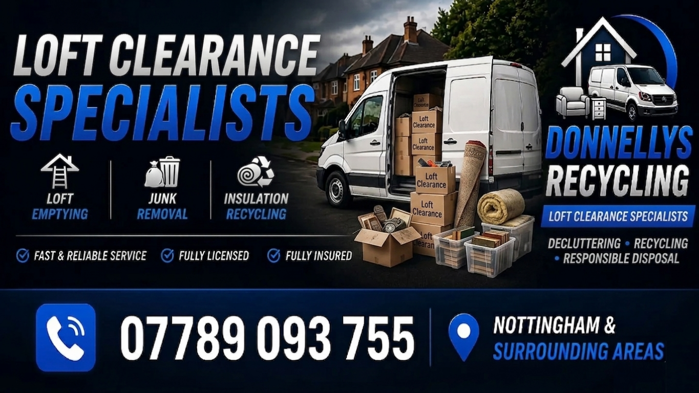

Loft clearance in Nottingham for homes and rental properties. We remove boxes, old furniture, insulation offcuts and general loft clutter quickly and safely.
Boxes, bags, old furniture, toys, clothes and general clutter removed.
We work carefully through loft hatches and stairways to protect your property.
All waste is disposed of legally with recycling wherever possible.
Send a quick message and we’ll get back to you ASAP.
We provide loft clearance across Nottingham and surrounding areas including:
Nottingham postcodes covered: NG1, NG2, NG3, NG4, NG5, NG6, NG7, NG8, NG9, NG10, NG11, NG12, NG13, NG14, NG15, NG16.
Yes — we offer fast loft clearance and can usually arrange same-day or next-day service across Nottingham and surrounding areas.
Loft clearance costs depend on the volume of items and ease of access. For an accurate price, we recommend sending a photo of the space via WhatsApp so we can provide a free, no-obligation quote.
We also provide house clearance and rubbish removal in nearby locations: